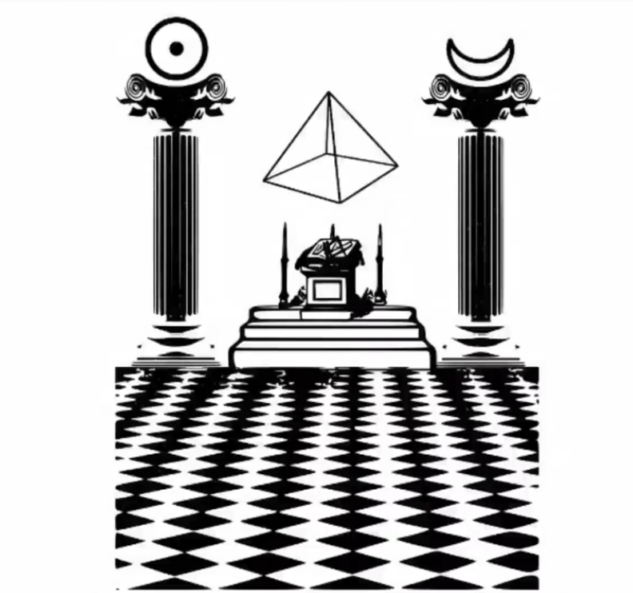

Light of the Cleansing Fire
The trail begins with a single, cryptic handle: @svulturvolans. This Twitter account serves as the threshold to Sodalitas Vulturis Volantis (SVV), a digital mystery that feels less like a recruitment drive and more like a descent into a clandestine society. Those who follow the breadcrumbs find themselves at humanisbeing.com, a site drenched in ominous Latin and the unsettling drone of strange music.
The application process for SVV is a study in calculated exposure. While the mystery encourages participants to shield their physical location, it demands a direct, verified line to their primary digital life. The price of admission is a strange blend of the analog and the digital, requiring a level of personal submission that feels intentionally intrusive.
"Make sure to use fake information for at least your name and address... but you must use your real e-mail."
The first significant barrier to entry is found at the /applicants URL, where a gatekeeper known as "Tyme" challenges the intellect of the seeker. Two sentences await the investigator, both guarded by Vigenere ciphers that demand specific keys to unlock. Deciphering the first reveals the gatekeeper’s self-proclamation: "I am Tyme, producer of cunninge."
The second sentence is more resilient, requiring two separate keys—"SVV" and "thirtythree"—to finally yield its secrets. Once these initial riddles are breached, the path leads to a technical gauntlet at the /2-2 page. To advance, seekers must perform the following:
SVV does not stay confined to the safe glow of the browser; it frequently bleeds into physical space. The mystery utilizes its Twitter presence as a bridge, posting coordinates that anchor the digital ciphers to real-world locations. For many participants, these coordinates point to places they are "too far away to get to," creating a sense of a global, unreachable network.
The investigation demands more than just clicking through links on humanisbeing.com or oldwvlf.com. Players must grapple with ancient alphabets and ciphers that turn the real world into a puzzle board. This move beyond the screen forces a confrontation between a digital fiction and the participant's physical reality.
The organization within SVV is strictly hierarchical, overseen by a shadowy figure known as the Chancellor. This isn't just roleplay; the Chancellor sends emails containing specific "letters" that act as functional tools for decoding subsequent layers of the mystery. Progression is marked by titles that dictate a player's level of access and their responsibilities to the collective.
The entry-level role, attained only by submitting a secondary form at /three/ containing the phrase "ain soph aur."
Tasked with leading the Infantes and transmitting specific "sounds" to the Chancellor to proceed.
A specialized guide who communicates only through a real-life intermediary.
The power dynamics of SVV are laid bare by a specific interaction involving Misero, the Prince of the North. When Misero was assigned a mission to spread knowledge by placing a symbol in the physical world, a Knight named TriVav completed the task on his behalf due to timezone constraints. The Chancellor’s response reinforced a chilling internal class structure:
"As a Prince, it is only right that you get a Knight to do your work."
This interaction suggests that the roles are more than cosmetic labels. They establish a functional social hierarchy where certain "important" roles can command the labor of others. It transforms the ARG from a collaborative puzzle into a simulation of power and servitude.
The current state of the SVV investigation remains in a state of eerie suspension. There are no known paths after role confirmation, leaving players to scour the associated domains for any missed clues or hidden pages. Participants are left decoding the Chancellor's ongoing tasks, caught in a loop of digital surveillance and ancient ciphers.
The mystery persists, leaving a lingering question about the nature of these communities. One must wonder at the lengths people will go to solve a puzzle that offers no clear reward. For the followers of the Vulture, the only prize is the promised "Light of the Cleansing Fire."